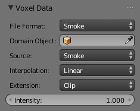

Dữ Liệu Không Gian 3D -- Voxel Data¶
Voxel data renders a voxel source, working very similarly to an image texture, but in 3D. Various input data source types are available (such as smoke voxel data, or external files), as well as various interpolation methods.
The default voxel data source, Smoke, is used for rendering smoke simulations. Other sources include binary raw formats, and Image Sequence, which can be used to stack a sequence of images into a 3D representation, which is a common format for medical volume data such as CT scans.
Sắp Đặt -- Settings¶

Voxel Data panel.
- Định Dạng Tập Tin -- File Format
- Dữ Liệu 3D của Blender -- Blender Voxel
- Default binary voxel file format.
- RAW 8 bit -- 8 bit RAW
- 8 bit gray-scale binary data.
- Trình Tự Hình Ảnh -- Image Sequence
- Generate voxels from a sequence of image slices.
- Khói -- Smoke
- Render voxels from a Blender smoke simulation.
- Đường Dẫn Nguồn -- Source Path
- The external source data file to use for 8 bit Raw data and Blender Voxel formats.
- Domain Object (Smoke)
- Object used as the smoke simulation domain.
- Nguồn -- Source
- Khói -- Smoke
- Use smoke density and color as texture data.
- Lửa -- Flame
- Use flame temperature as texture data.
- Nhiệt -- Heat
- Use smoke heat as texture data. Values from -2.0 to 2.0 are used.
- Tốc Lực -- Velocity
- Use smoke velocity as texture data.
- Độ Phân Giải -- Resolution
- Resolution of the voxel grid when using 8 bit Raw data.
- Nội Suy -- Interpolation
- Hàng Xóm Gần Nhất -- Nearest Neighbor
- No interpolation, fast but blocky and low quality.
- Tuyến Tính -- Linear
- Good smoothness and speed.
- Bậc Hai -- Quadratic
- Mid-range quality and speed.
- Catmull-Rom Lập Phương -- Cubic Catmull-Rom
- Smoothed high-quality interpolation, but slower.
- Nới Rộng/Đuôi -- Extension
- Nới/Mở Rộng -- Extend
- Extend by repeating edge pixels of the image.
- Cắt/Xén -- Clip
- Clip to image size and set exterior pixels as transparent.
- Lặp Lại -- Repeat
- Cause the image to repeat horizontally and vertically.
- Cường Độ -- Intensity
- Multiplier for intensity values.